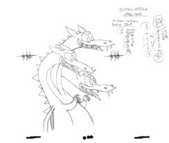
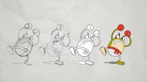

Games
Games use animations to immerse the player in a believable world (by believable I don’t mean realistic). It can also establish a mood and atmosphere. Live action for a game is rarely seen as it is a lot more difficult to create. Live action would also make games feel more boring and less fun since there is only so much you could do with live action.
Cuphead
Cuphead is a game that uses 2D, frame by frame animation. It is drawn in twos, which means there's a frame every 12 seconds. Its animation is a lot more traditional, with it being hand-drawn and emulating a rubber hose style.
The principles of animation are used in this game quite frequently. A lot of attacks have heavy anticipation to make sure you can sightread what happens.
 Movies and Shows
Shows and movies, mostly indie, use animation as a medium to express their story. Live action tends to be very costly, especially when stories have scenes where things cannot happen in real life. Acting, visual effects, and a set are all needed to make a movie or show seem higher quality. Animation covers all of these things in one. You can animate the acting, model the scenes, and create whatever unrealistic situation you want with animation.
Spiderman into the Spider-verse
Unlike other 3D animated movies, Spider-verse decided to be a bit more creative when animating. Instead of interpolating inbetweens, the animators made the animation stepped to add more emphasis on poses. When Miles (the main character) appears to be struggling, the animation switches to twos instead of ones. This was to emphasize Miles' inexperience compared to everybody else in the group, who seem to be moving more fluidly.
Jumpy Cube